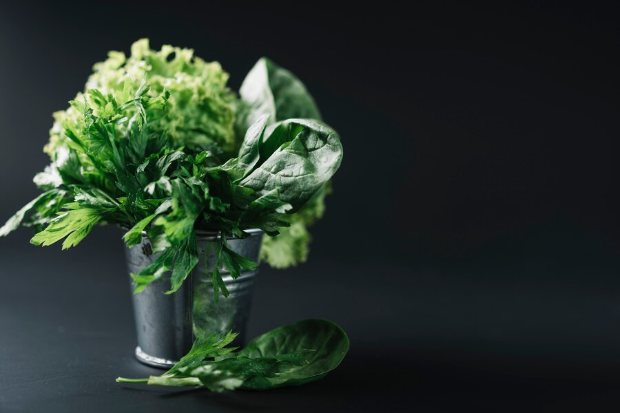
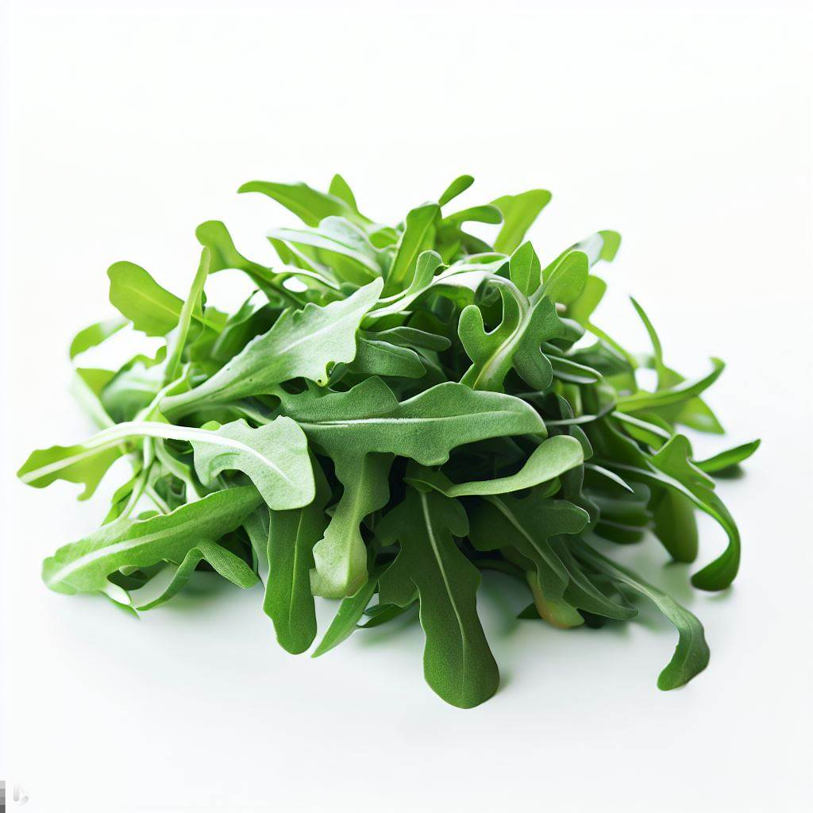
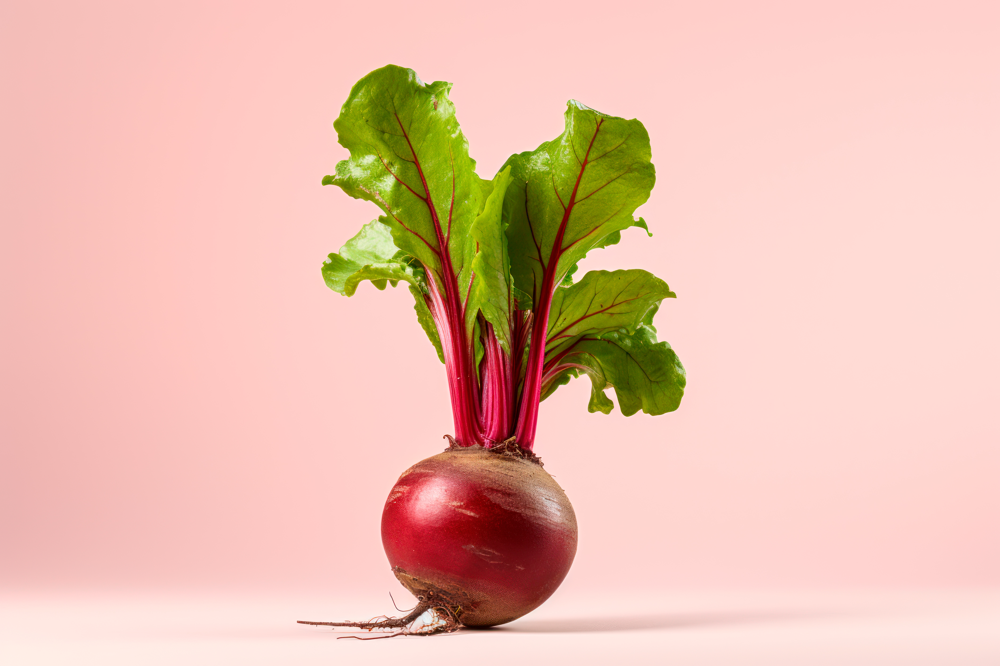
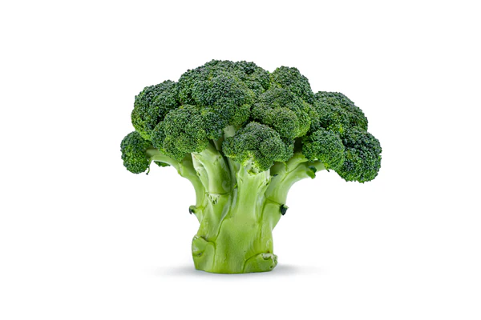
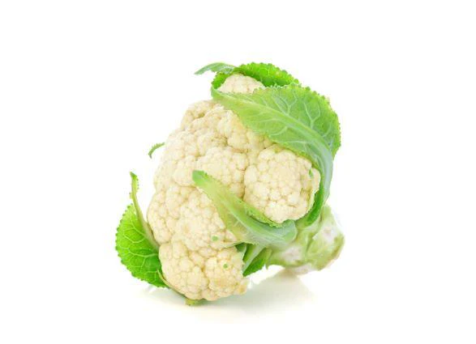
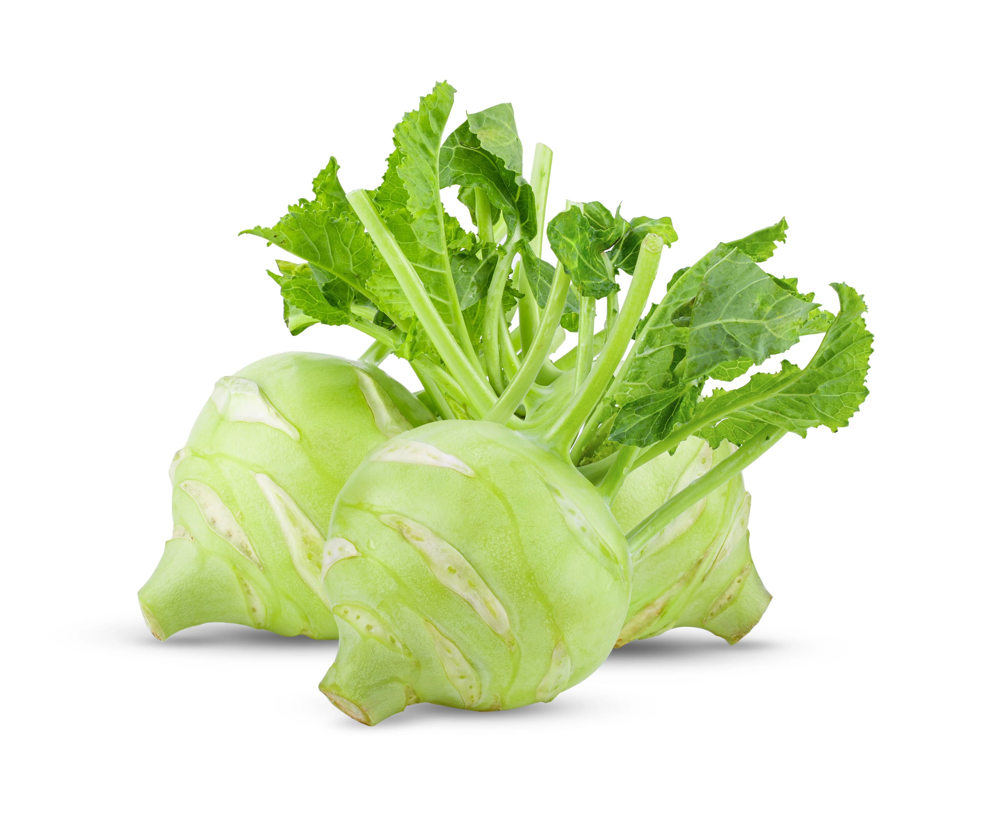
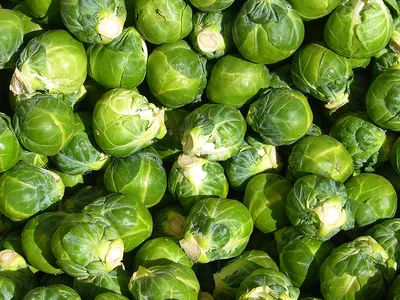

South Branch
Leafy Vegetables:Kale, Spinach, Lettuce, Arugula, Leeks, Celery etc. are available at this branch.

Kale Leaves
Rs.300

Spinach
Rs.350

Lettuce
Rs.200

Arugula
Rs.300

Leeks
Rs.400
Dehiwala Branch
Root Vegetables:Carrots, Potatoes, Beets, Radishes, Sweet Potatoes are available at this branch.

Carrot
Rs.500

Potato
Rs.690

Beetroot
Rs.200

Radish
Rs.700

Sweet Potato
Rs.480
Rathmalana Branch
Cruciferous Vegetables:Broccoli, Cauliflower, Bok Choy, Turnips and Brussels Sprouts are available at this branch.

Broccoli
Rs.900

Cauliflower
Rs.790

Bok Choy
Rs.600

Turnips
Rs.300

Brussels Sprouts
Rs.800